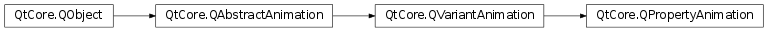

QPropertyAnimation¶
Note
This class was introduced in Qt 4.6.
Synopsis¶
Functions¶
- def
propertyName() - def
setPropertyName(propertyName) - def
setTargetObject(target) - def
targetObject()
Detailed Description¶
The
PySide2.QtCore.QPropertyAnimationclass animates Qt properties
PySide2.QtCore.QPropertyAnimationinterpolates over Qt properties . As property values are stored inPySide2.QtCore.QVariants, the class inheritsPySide2.QtCore.QVariantAnimation, and supports animation of the samemeta typesas its super class.A class declaring properties must be a
PySide2.QtCore.QObject. To make it possible to animate a property, it must provide a setter (so thatPySide2.QtCore.QPropertyAnimationcan set the property’s value). Note that this makes it possible to animate many of Qt’s widgets. Let’s look at an example:QPropertyAnimation *animation = new QPropertyAnimation(myWidget, "geometry"); animation->setDuration(10000); animation->setStartValue(QRect(0, 0, 100, 30)); animation->setEndValue(QRect(250, 250, 100, 30)); animation->start();The property name and the
PySide2.QtCore.QObjectinstance of which property should be animated are passed to the constructor. You can then specify the start and end value of the property. The procedure is equal for properties in classes you have implemented yourself–just check withPySide2.QtCore.QVariantAnimationthat yourPySide2.QtCore.QVarianttype is supported.The
PySide2.QtCore.QVariantAnimationclass description explains how to set up the animation in detail. Note, however, that if a start value is not set, the property will start at the value it had when thePySide2.QtCore.QPropertyAnimationinstance was created.
PySide2.QtCore.QPropertyAnimationworks like a charm on its own. For complex animations that, for instance, contain several objects,PySide2.QtCore.QAnimationGroupis provided. An animation group is an animation that can contain other animations, and that can manage when its animations are played. Look atPySide2.QtCore.QParallelAnimationGroupfor an example.
-
class
PySide2.QtCore.QPropertyAnimation([parent=nullptr])¶ -
class
PySide2.QtCore.QPropertyAnimation(target, propertyName[, parent=nullptr]) Parameters: - propertyName –
PySide2.QtCore.QByteArray - parent –
PySide2.QtCore.QObject - target –
PySide2.QtCore.QObject
Construct a
PySide2.QtCore.QPropertyAnimationobject.parentis passed toPySide2.QtCore.QObject‘s constructor.Construct a
PySide2.QtCore.QPropertyAnimationobject.parentis passed toPySide2.QtCore.QObject‘s constructor. The animation changes the propertypropertyNameontarget. The default duration is 250ms.- propertyName –
-
PySide2.QtCore.QPropertyAnimation.propertyName()¶ Return type: PySide2.QtCore.QByteArray
-
PySide2.QtCore.QPropertyAnimation.setPropertyName(propertyName)¶ Parameters: propertyName – PySide2.QtCore.QByteArray
-
PySide2.QtCore.QPropertyAnimation.setTargetObject(target)¶ Parameters: target – PySide2.QtCore.QObject
-
PySide2.QtCore.QPropertyAnimation.targetObject()¶ Return type: PySide2.QtCore.QObject
© 2018 The Qt Company Ltd. Documentation contributions included herein are the copyrights of their respective owners. The documentation provided herein is licensed under the terms of the GNU Free Documentation License version 1.3 as published by the Free Software Foundation. Qt and respective logos are trademarks of The Qt Company Ltd. in Finland and/or other countries worldwide. All other trademarks are property of their respective owners.